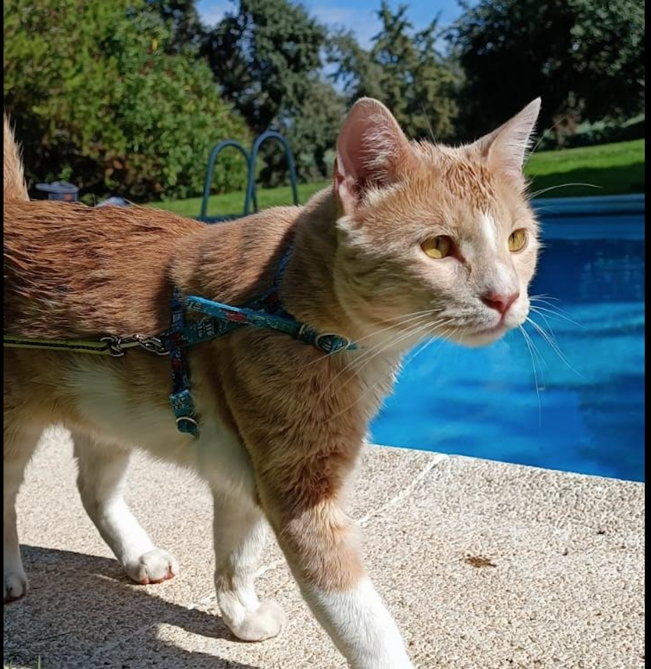
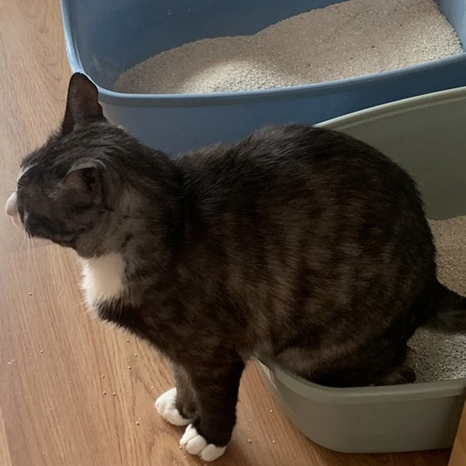

Prefiero a los gatos, antes que a los perros, porque no existen los gatos policías
Summer 2021
Llegó el verano de 2021, un verano post covid, depresivo, casi más gris y menos caluroso de lo habitual, pero claro, león es un gato y, viste, no le importa nada.

(Bueno, en realidad hay cosas que si le apasionan, pero si nos salimos de ese pequeño abanico, nos encontramos frente a un gato feliz, feliz ante lo inconmensurable de su vil y tierna existencia)
Dentro de unos años, cuando ya su pelaje sea más blanquecino que amarillento, me imagino a Don León, sentado sobre sus patitas traseras filosofando sobre el absurdo de la vida, sísifo y la creación de la rueda.
Spring time
Otro de sus grandes placeres y castigos, es irse de camping, empaca en su mochilita su palita de arena, sus botitas y como no, su botellita de aguardiente y su paquetido de tabaco, y se tira sobre el césped, a pensar en la vida y ver las palomas pasar, pensando en su vida de paloma, si será o no una paloma feliz.

Aunque no lo parezca, en realidad es un gato reservado, de esos que se esconden para no ser vistos, pero que atraviesan la muchedumbre imaginando la vida de cada individuo, deseandole profundamente la mejor de las suertes, y que el pan siempre le sobre y nunca le falte.
Ademas de ser un gato inconformista, es muy independiente y dueño de su vida: «tenía dos opciones, permanecer en Catyland y volverme loco… o largarme, intentar ser un alma libre y morirme de hambre. Así que decidí morirme de hambre y aquí estoy, cenando wishkas».
Claro, no todo iba a ser sobre León
Marvin es una vaquita con cara de pene y muy mal carácter, los años no le han dado tregua, ya casi alcanzando la catopausia felina, Marvin nos despide sin habernos siquiera saludado, de un mezquino zarpazo y un bufido aterrador; tras hacer la siguiente declaración:

Casi siempre, lo mejor de la vida felina consiste en no hacer nada en absoluto, en pasar el tiempo maullando, pidiendo comida, sobre todo, haciendo como que me muero de hambre, aunque sin ser real. Quiero decir, pongamos que alguien es capaz de comprender que todo es un absurdo, entonces no puede ser tan absurdo porque uno es consciente de que es un absurdo y la conciencia de ello es lo que le otorga sentido. ¿Me entiendes? Es una especie de pesimismo optimista. Marvin no es un androide paranoide, es un gato paranoide
Claro, tampoco iba a ser todo sobre Marvin
Mimo es un gato re-mimado, solo beberá agua si la cambias en el momento, solo hará caca si estás limpiando el arenero, los años tampoco le han dado tregua. Siempre está nervioso, o agobiado, o triste, o con hambre, o intentando escapar, aunque si le preguntas... Te dirá que el mayor handicap de sus ambiciones escapistas, es la pereza.

Coincide con Marvin en que "Casi siempre, lo mejor de la vida felina consiste en no hacer nada en absoluto."